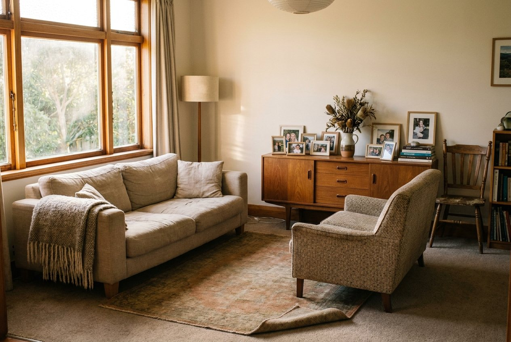

Six motion primitives and one 3D module. Every one of them answers the same question: is this becoming more complete? If it isn’t, it doesn’t ship.
Each form belongs to a kind of work. Pick one — it disperses and resolves. Drag it.
Constitution §12: 3D is abstract, manufacturable, never a literal robot or brain. Each of these is a real object in the work — a ledger, a queue, a place.
No fades. A word rises out of its own mask; an image arrives from behind a wipe while its scale settles. Both read as material, not slideshow.

data-m="type"Headlines assemble word by word, each in its own mask.data-m="wipe"Photographs resolve behind a moving edge, scale settling.data-m="rise"Anything assembles into place on entry. Never a fade.data-m="depth"An image holds depth against the pointer. 14px maximum.The same assembly, in four materials. Ink flows on a curl field until it settles; the metals are lit by a softbox so they read as manufactured objects, never glowing dots. Switch and watch it re-form.
Constitution §6: brushed silver, never polished mirror chrome. Brass is assembl’s own metal — used for proof and receipts, sparingly.
Seeded per client, so the pattern is theirs and identical on every load. Tiles land on a diagonal wave in the brand colour, with ink and brass through it. Once settled, one tile turns over every few seconds — and nothing else moves.
Six pixels of movement, and a cursor that widens on anything that answers. Felt rather than seen — which is the whole difference between premium and busy.
Constitution §11: avoid spinning loaders, bouncing, parallax, dramatic easing. Motion should feel inevitable.
This system exists so an assembl page never has to explain itself in a paragraph. The reader scrolls, and the thing does what the paragraph would have said.